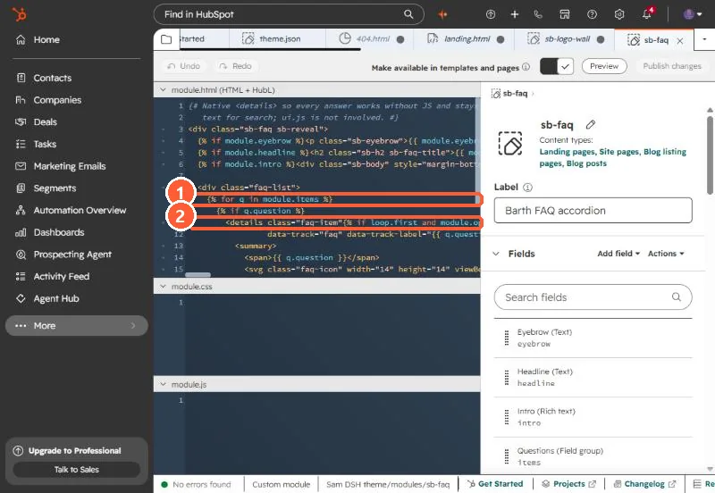

Short answer
Google's Search Central updates log says the FAQ rich result "will no longer appear in Google Search starting May 7, 2026." Google had already limited FAQ rich results to well-known government and health sites in 2023. What still helps is the FAQ content itself being in the page HTML. My theme's FAQ module renders each question as a native <details> element so answers are in the page text without JavaScript. If you keep FAQPage JSON-LD, generate it from the same module fields, because a hand-written copy drifts.
1. What changed
Google's documentation updates page records a deprecation notice on the FAQ rich result docs and says the feature will no longer appear in Google Search starting May 7, 2026. In August 2023 Google had already limited FAQ rich results to well-known, authoritative government and health websites. For most HubSpot sites, FAQPage markup has not produced the expandable search result for some time.
2. Build the FAQ so the answers are in the HTML
My theme's FAQ module uses a repeater of question and answer fields and renders native <details> elements. Every answer is in the page source, works without JavaScript, and is readable by anything that reads the page text:
{% for q in module.items %}
{% if q.question %}
<details class="faq-item"{% if loop.first and module.open_first %} open{% endif %}>
<summary>{{ q.question }}</summary>
<div class="faq-a">{{ q.answer }}</div>
</details>
{% endif %}
{% endfor %}

3. If you keep FAQPage JSON-LD, generate it
On our office hours landing page the FAQ JSON-LD was written by hand in the page head. When the session time changed, the visible FAQ was updated and the JSON-LD still had the old time until I fixed it. If you keep the markup, output it from the same module loop so there is one source:
<script type="application/ld+json">
{"@context":"https://schema.org","@type":"FAQPage","mainEntity":[
{% for q in module.items %}
{"@type":"Question","name":{{ q.question|tojson }},
"acceptedAnswer":{"@type":"Answer","text":{{ q.answer|striptags|tojson }}}}{% if not loop.last %},{% endif %}
{% endfor %}]}
</script>View the rendered page source after publishing to confirm the JSON-LD matches what visitors see.